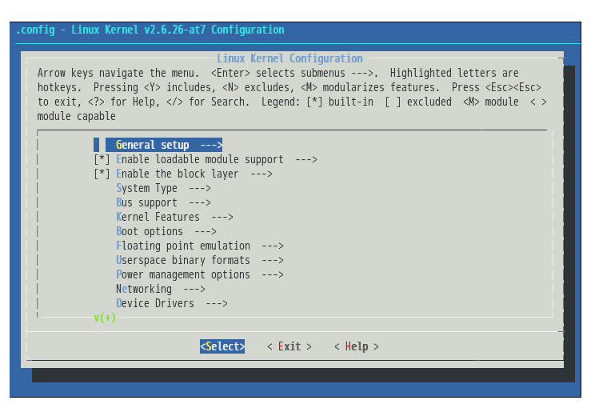

#ifdef Stem
The conditional compilation in C allows project in a dynamic mod with configuration options selcted. LoongFMR follows this pattern and extends it to Java. Therefore, module is the basic component in this research and decided by configurations (#ifdef pattern in C)
Module System
A module-system based processing strategy allows developers check who variability is resolved and changed during configuration.

Linux Kernel Case Study.
Linux Kernel Case Study allows developers understand more about preprocess and how #def bring variability to system.